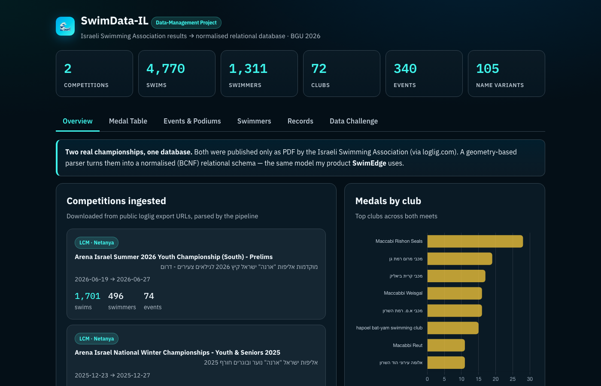
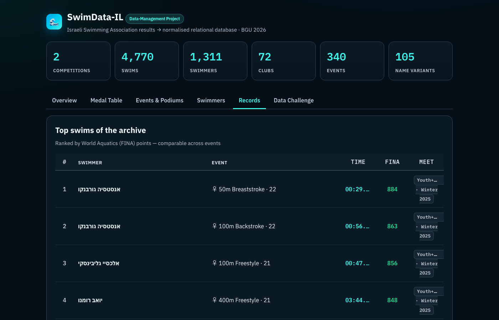
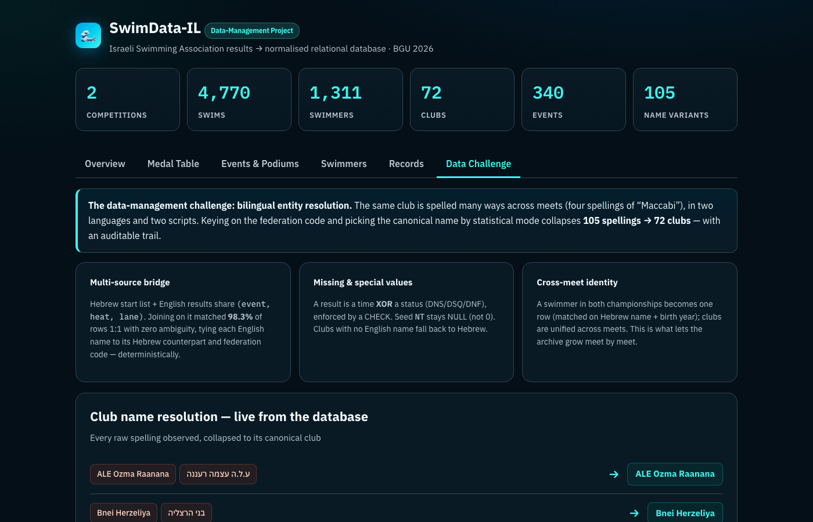

Turning Israeli Swimming Association PDF results into a normalised relational database — with bilingual entity resolution, BCNF design, and an interactive explorer. Final project · Data Management · Ben-Gurion University · Spring 2026.


sql/04_queries.sql).
Screenshots are from a local build over public ISA competition PDFs.
Raw meet PDFs and generated swimmer-level datasets are not in the repository
(privacy — many athletes are minors). Clone the repo and run bash build.sh
with PDFs in samples/ for the full interactive dashboard.